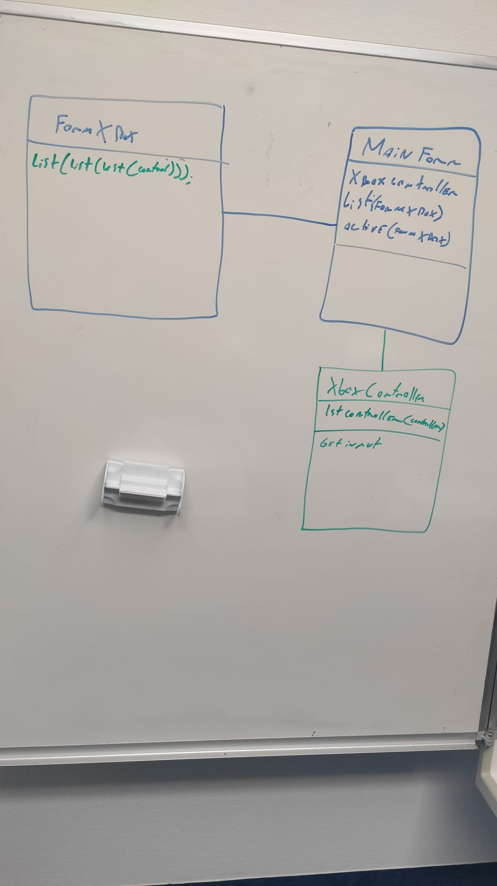
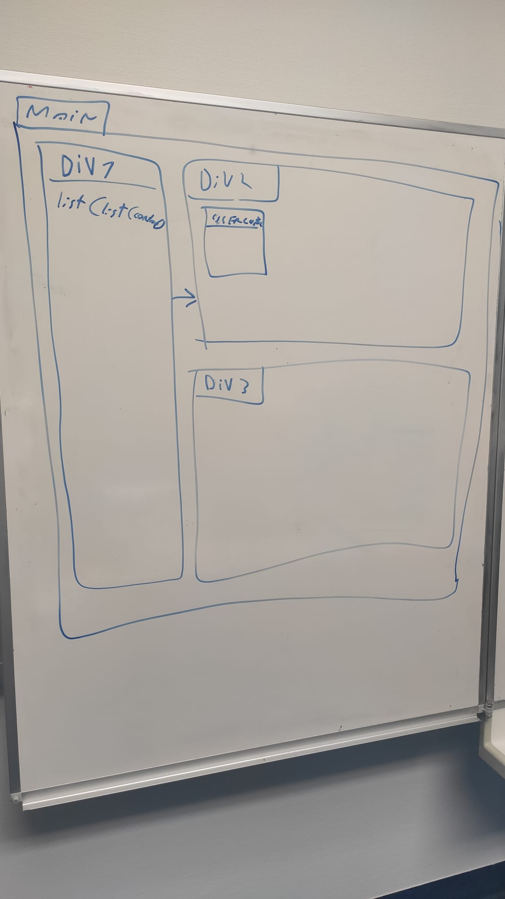
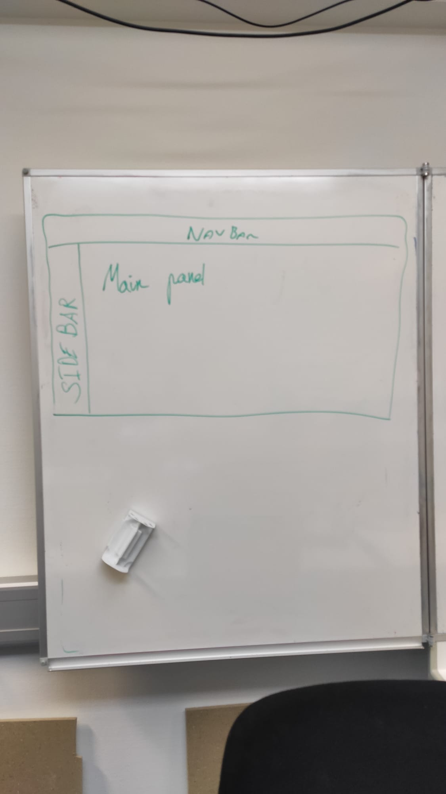

Logbook¶
19.04.2021¶
8h05¶
Entretiens avec M. Garcia
9h05¶
Copie de mon disque pour Gawen
9h20¶
Création du git
9h30¶
je réfléchi à ce par quoi je vais commencer j’hésite entre commencé entre le site web ou les téléchargement
10h30¶
Installation de laragon
10h40¶
Création de la base de données
12h40¶
Création de la structure du site web
14h35¶
Création des différente pages et mise en place de bootstrap
résumé¶
j’ai créer la base de donnée et le site web
20.04.2021¶
8h05¶
je continue à créer le site web je crée les formulaires pour la connexion
15h20¶
J’ai impliqué la création de compte et la connexion, le mail doit être unique et le username aussi.
j’ai selon les indication de M. Schmid utilisé les fonctions
password_hash et password_verify de php.
15h30¶
j’ajoute des donnée a la main dans la bdd
15h56¶
aide de M.Schmid pour du sql
21.04.2021¶
8h10¶
Modification de la structure du site et ajout de l’update de mots de passe
13h00¶
l’affichage des jeux est disponible ainsi qu’une recherche sur les jeux grâce à leurs noms.
15h00¶
l’affichage de la recherche et du détail d’un jeu fonctionne mais n’est pas beau.
22.04.2021¶
8h05¶
Ajout de l’affichage des catégories de chaque jeu
9h00¶
Affichage des jeux qui appartiennent à une catégorie.
10h20¶
modification de l’interface de recherche
notes personnelles¶
je dois ajouter une table pour savoir le nombre d’heure de jeu de chaque utilisateurs
je dois ajouter une gestion des messages d’erreurs.
je peux ajouter une photo de profil
11h0¶
modification de l’interface de connexion et de d’inscription
11h50¶
suppression de la page de création de compte
12h40¶
Ajout d’un jeux en favoris
15h00¶
suppression d’un jeu en favoris
a faire demain¶
l’affichage des card dans le dashboard n’est pas bon
23.04.2021¶
8h05¶
modification de la l’interface du Dashboard
8h40¶
Ajout d’un champ dans la table utilisateur pour spécifier si l’utilisateur est privé ou non si l’utilisateur n’est pas privé tout le monde va pouvoir voir son profils
9h30¶
la modification du paramètre pour savoir si le compte est privé ou non
12h20¶
test de Git Hook
13h30¶
modification de l’interface theme blanc -> dark
15h20¶
Création de la page de téléchargement et mise en place de du téléchargement de Caiman depuis le site
notes pour la prochaine fois¶
Je dois créer la partie Administrateur du site
Je dois créer un une fonctionnalité qui me permet de gérer les messages d’erreurs
Je dois sécuriser l’accès au pages
je dois sécuriser les différents formulaires
je dois je dois me renseigner comment uploader des gros fichier depuis un poste clients
je dois changer de navbar
26.04.2021¶
8h05¶
notes personnelles:
je dois ajouter la possibilité d’afficher la page d’un utilisateur
je dois corriger mon script d’export de base de données
8h10¶
Création de la page dédiée aux administrateurs.
8h30¶
Ajout de catégorie
9h00¶
Ajout de jeu
notes personnels¶
j’ai regardé plusieurs méthodes pour envoyer un fichier depuis un formulaire en php. Pour l’instant j’utilise les fonctions de base de php et elle fonctionne donc je vais faire des tests une fois le site uploadé sur le Bunker.
11h00¶
le fichier .iso est uploadé avec le bon nom mais pas encore dans la base de données
15h00¶
Le jeu est bien ajouté avec le bon nom ainsi que la bonne image.
15h45¶
il est maintenant possible de mettre à jour le nom, la description ou la console d’un jeu.
15h50¶
modification de la structure du git
27.04.2021¶
8h05¶
ajout/ suppression de catégories a un jeu
9h20¶
modification mineur de l’interface
10h05¶
recherche d’un profil utilisateur
12h15¶
la recherche et l’affichage d’un profil utilisateur est fonctionnel
13h00¶
modification de l’interface pour que les jeux s’affiche correctement
13h30¶
Le site est fonctionnel mais il manque des détail comme les message d’erreur et les droit sur les pages
notes personnelles¶
pour finir le site il me reste les choses suivante a faire:
Sécuriser les pages
afficher des messages d’erreur
suppression de catégories
suppression de jeu
mot de passe oublié
commenter mon code
pagination pour les recherches
13h40¶
documentation
28.04.2021¶
8h05¶
documentation
10h40¶
correction d’un bogue sur le nombre d’heure de jeu et riage des jeux par heure de jeu
11h00¶
gestion des droit d’accès au page
13h10¶
modification de la navbar
14h00¶
gestion des erreurs de du login
29.04.2021¶
8h30¶
Documentation
10h20¶
Mr. Garcia m’a aidé à mettre en place ma documentation doxygen
11h00¶
documentation
30.04.2021¶
8h05¶
Correction du logbook
8h20¶
supression de code inutile sur le site et mis a jour de la doccumentation
9h30¶
ajout de contrainte dans la base de données
10h45¶
Création du planning effectif
13h00¶
Configuration de debian
user tfp : FTPdiplomant password ftp : SuperCfpt@
J’ai pus installer apache, php, et mysql mais je n’arrive pas à me connecter en ftp. A la connexion je bloque sur l’erreur : “Impossible de récupérer le contenu du dossier”. Malgré l’aide de Mr.Schmidt je n’ai toujours pas réussi.
15h20¶
Je n’arrive toujours pas a me connecter au ftp, je ne sais pas si le probléme viens de ma configuration ou du firewall
notes pour le premier rendu¶
J’ai durant ces deux premières semaines, créé le site internet de Caiman. Le site n’est pas fini à 100% mais les fonctionnalités de base sont toutes implémentées. Les fonctionnalités actuelles permettent de faire toutes les choses nécessaires au fonctionnement de l’application. J’ai pris plus de temps que prévu à réaliser le site mais durant la création de mon planning prévisionnel j’ai fait des erreurs, j’ai par exemple oublié de planifier la création des fonctionnalités d’administration ( Ajout de jeux, ajout de catégories, assignation de catégories à un jeu, upload de jeux, etc ).
La documentation du site n’est pas forcément touffue mais le site n’est pas particulièrement complexe, il m’a pris du temps dû au nombre de tables à gérer. Il reste à mettre en place la récupération de mot de passe mais j’ai décidé de passer à l’interface graphique de l’application C# dès la semaine prochaine. Étant donné que le projet est la partie la plus importante de l’application, je ne vais pas configurer la récupération de mot de passe maintenant.
03.05.2021¶
8h10¶
Réflexion sur l’interface graphique et création du projet
8h15¶
Importation de la classe XboxController.cs que j’ai créé précédemment.

La table MainForm contient un XboxController() cette classe permet de connaître les manettes connectés au pc et de recevoir leur inputs.
Elle contient aussi une liste de form, ces formes sont les différentes fenêtres de l’application (si possible j’aimerai faire que seul une fenêtre soit active).
Je fais des test avec les usercontrols
10h00¶
je n’arrive pas a afficher dynamiquement quand une action est faite.
12h00¶
Mon problème venait du fait que je n’initialisait pas l “usercontrol.
13h00¶
Je vais essayer de me baser sur la structure des div en html pour gérer le contenu de l’affichage. 
14h00¶
FInalisation de la configuration du serveur
04.05.2021¶
8h05¶
Je continue à faire des test pour pouvoir bouger le focus d’une “div” a une autre
11h00¶
Je continue à faire des test mais j’ai apporté des modifications:
le MainForm ne contient pas une liste de list de control, ce n’est pas nécessaire sachant que le lien entre les control est seulement connu des sous contrôle
dorénavant chaque sous control possède une liste de listes de control pour pouvoir se déplacer.
quand on déplace la position maximum dans un sous control il y a deux possibilité.: un control est disponible dans la direction souhaité rien n’est disponible Si un control est disponible alors la main form est informée qu’elle doit changer d’activeForm pour pouvoir se déplacer dans de bonne condition.
12h05¶
Le déplacement dans chaque form fonctionne et l’on peut passer d’une form à une autre.
05.05.2021¶
8h05¶
Je continue à améliorer le fonctionnement de l’interface.
J’ai décidé de diviser l’interface en 3 “partie” la navbar la sidebar le main contenu

10h50¶
J’ai créé une nouvelle classe ButtonContext.cs, elle contient les paramètres qui doivent être passer a la forme pour quel sache l’action à exécuter.
Il est maintenant possible de cliquer sur un bouton et la manette va reprendre la ou l’utilisateur a cliqué.
12h40¶
Je permet le déplacement grâce au joystick gauche
13h00¶
J’essaie de faire en sorte que je puisse revenir en arrière dans les fenétre
15h00¶
J’ai essayé de sauver dans une liste les choses précédemment affichée mais j’ai des soucis avec les liens entre les différents panel.
Je vais essayer de recréer les anciens panel a chaque fois au lieu de les recharger.
06.05.2021¶
8h05¶
Je continue a faire en sorte que je puisse retourner en arrière grâce à la touche “B”
9h00¶
Il est maintenant possible de revenir en arrière dans la navigation
10h00¶
si il y a des “trou” dans la navigation le curseur le contourne
10h40¶
J’essaie d’afficher des images dans l’application
13h00¶
J’ai discuté avec Mr Maréchal de mon git. Pour pouvoir appliquer correctement mon gitignore j’ai dus supprimer les fichier du git
14h00¶
J’ai fais des recherche sur la publication de projet et j’ai corrigé des bugs
07.05.2021¶
8h05¶
J’ai essayé le paquet “Microsoft Visual Studio Installer Projects” que m’a conseillé M. Schmid. L’installation marche mais certains dossiers de PCSX2 et de Dolphin ne sont pas inclus dans l’installation.
10h00¶
Je commente les classe que j’ai créé et je supprimer les fonctions qui ne sont pas utilisé
12h40¶
documentation + Création d’une release pour pouvoir essayer l’interface
Je déplace la documentation du projet web au projet desktop la seul documentation qui reste dans le projet web est celle qui concern son propre code (doxygen)
notes personnelles¶
Je dois modifier la connexion a la base de données pour passer des fonctions de cryptographie de PHP au mds. Le problème ce que je ne peux pas me connecter depuis le c# avec les fonctions de cryptographie de php.
15h30¶
J’ai mis à jour ma documentation du projet.
J’ai essayé d’ajouter des tâches à mon git mais j’ai eu des soucis pour la signature du projet donc je remet ça à plus tard.
10.05.2021¶
8h05¶
Je modifie la création de mot de passe et la connexion pour qu’un utilisateur puisse se connecter depuis le site web et Caiman.
J’utilisais les fonctions de php (password_hash et password_verify) mais je passe a du md5 + salt. La raison est que je ne pouvais pas utiliser ces fonctions pour me connecter depuis l’application c#.
10h10¶
je vais essayer de créer un login en C#
Pour ce faire, je commence par créer une classe “AccessDatabase.cs” pour communiquer avec la base. Pour stocker la la connexionString je l’ai mise dans les settings de l’application.
10h45¶
Pour pouvoir me connecter a la base de donnée je dois passer par le port 1433 mais il est fermé dans le firewall du coup je dois essayer de me connecter par le port 433
13h30¶
Je commence à créer la “vrai” interface je commence par les menu de configurations et le menu pour quitter l’application.
14h00¶
Après une discussion avec M. Scmid j’ai décidé de faire une api.
14h30¶
J’ai demandé à M.Borel de l’aide pour la structure de mon api, il a pu m’indiquer une structure correcte mais elle est très verbeuse donc je vais surement avoir pour minimum 3 jours a faire mon API.
11.05.2021¶
8h00¶
Je continue mon api, je commence par essayer la structure de M.Borel sur une seule table pour essayer puis je vais faire les autres.
11h40¶
Je peux maintenant faire des requêtes mais j’ai un souci avec les headers. Le hearder Autorization n’est pas correctement recu Je pense que vu le temps que faire une API prend je fais faire en sorte que l’API ne soit que faite pour Caiman. Je vais donc seulement créer les requêtes nécessaires
13h00¶
Je vais lister les requêtes qui me seront potentiellement utile pour Caiman
liste des jeux recherche de jeu affichage des informations d’un jeu recherche des informations d’un utilisateur recherche des jeux avec un nombre qui ont été joué par un utilisateur particulier recherche d’un jeu selon sa catégorie jeux favoris d’un utilisateur recherche des jeux qui ont été joué connexion d’un utilisateur Création de compte réception d’un fichier de sauvegarde réception d’un fichier de configuration
13h40¶
Je fais un test d’appel a l’API depuis Caiman
14h20¶
Pour pouvoir utiliser correctement les appels à l’api je dois utiliser des objets que je je rempli avec chaque appel.
Par exemple, si je veux recevoir les informations d’un jeu je créer un objet jeu a qui je vais attribuer les données que je viens de recevoir.
Il me faut donc créer une classe pour l’utilisateur et une classe pour les jeux.
15h50¶
je dois aussi pouvoir connaître la liste des catégories grâce à l’API
16h00¶
Il est maintenant possible de récupérer les catégories
12.05.2021¶
8h05¶
Documentation et suppression de code inutile
13h00¶
J’ai discuté avec M.Smid il m’a donner des conseil sur pour mon api
14h30¶
J’ai changé les routes de mon api exemple: /games/userFavorites/8 => /games/?byUserFavorites=8
15h30¶
J’ai essayé de mettre l’api en ligne mais quand j’arrive sur une page j’ai une erreur 500.
13.05.2021¶
11h00¶
L’erreur 500 que j’avais était liée à une version de PHP, le serveur avait une version de php 7.3 alors que mon API a besoin d’une version PHP minimum en 7.4. J’ai donc mis à jour la version présente sur le serveur.
12h00¶
J’ai corrigé différentes erreurs liées à l’api par exemple quand on envoyait que le username et pas de password pour se connecter une erreur apparaissait.
13h00¶
J’ai une erreur sur le serveur quand je veux faire une requête d’utilisateur avec sa clé d’API j’ai une erreur 404.
Je vais peut etre passer la recherche d’api en POST et non en GET
14.05.2021¶
8h00¶
J’ai toujours une erreur quand je veux récupérer les informations d’un utilisateur grâce à son apitoken, l’erreur n’est présente que sur le caiman.cfpt.info. Pour corriger l’erreur je vais passer par du post pour éviter de perdre trop de temps.
09h22¶
j’ai push sur le serveur une version de l’API qui fonctionne bien, je vais maintenant continuer ma documentation
09h30¶
je me rend compte qu j’ai une requête qui ne marche pas
11h30¶
J’ai dû modifier le .htaccess pour pouvoir appliquer les rewriteRules. Le fichier n’était pas pris en compte sur le serveur je l’ai donc mis dans le dossier ou point le virtual host.
12h00¶
documentation
17.05.2021¶
8h05¶
Création d’une ébauche de diagram de classe sur le tableau.
J’ai repris en grande partie le diagramme de mon POC en y ajoutant une gestion des sauvegardes et des téléchagement.
13h20¶
J’essaie de réfléchir à la manière de télécharger les sauvegardes et la façon dont je dois stocker les jeux que l’utilisateur a téléchargé.
Je pense que je vais faire en sorte de vérifier si les jeux qui devraient être présents sur le disque de l’utilisateur le sont réellement.
Je vais faire en sorte que l’utilisateur ait la possibilité de pouvoir télécharger les jeux dans un dossier spécifique. Il va devoir au premier lancement de l’application spécifier ou l’installation doit se faire. (c’est peut etre contraire a mon but de faire une application simple d’utilisation).
Je dois aussi savoir si le disque de l’utilisateur n’a pas la place requise pour télécharger le jeu demandé.
14h35¶
Discussion avec M.Maréchal
18.05.2021¶
8h05¶
Je vais créer une page de connexion pour l’utilisateur
10h00¶
La connection marche, je vais maintenant télécharger les images des jeux
12h00¶
Je commence a faire en sorte que quand un nouveau jeu est reçu depuis l’API son image est automatiquement télécharger et mise dans le dossier %appdata% de l’application
13h30¶
J’affiche dans la sidebar le nom des catégories
15h00¶
Quand je clique sur une catégorie les jeux de la catégorie choisie sont afficher.
19.05.2021¶
8h05¶
je fais en sorte d’afficher tous les jeux quand je lance l’application.
9h00¶
je vais maintenant faire en sorte de pouvoir voir les détails d’un jeu.
9h30¶
J’ai un problème avec les image bouton le clic n’est pas pris en compte
11h00¶
j’ai corriger le soucis des boutons et je modifie un petit peu l’interface
13h00¶
je commence l’affichage des détails d’un jeu
14h00¶
je fais des recherche sur la façon de télécharger un jeu
20.05.2021¶
8h05¶
Je crée une route pour pouvoir recevoir le lien de téléchargement d’un jeu.
09h15¶
Je me rend compte que pour créer la route de téléchargement je dois:
Avoir le lien du site Avoir le lien pour la console avoir le nom du fichier
Pour avec ces différents éléments je dois modifier mon API pour pouvoir faire tout ça.
11h00¶
J’arrive à créer l’URL mais le fichier n’est pas accessible en dehors du serveur donc je ne sais pas vraiment quoi faire
12h50¶
Correction d’un problème où l’on pouvait se déplacer dans une case qui n’existe pas donc l’application plantait.
14h00¶
Je commence a faire en sorte que je puisse créer la route pour télécharger le fichier des jeux
21.05.2021¶
9h00¶
Je voulais télécharger un jeu en passant par le webClient en C# mais ma route est en POST dans mon API. Malheureusement je ne peux pas fournir de paramètres en POST avec la fonction downloadFileAsync donc je dois passer ma route en GET
11h00¶
j’ai changé ma route et j’en ai ajouté pour pouvoir connaître les dossiers ou je dois stocker les jeux et le nom du fichier d’un jeu.
16h00¶
J’ai réussi à afficher la liste des téléchargements et maintenant je suis en train de faire en sorte de pouvoir ajouter un jeu au favoris. j’ai réglé des soucis de droit d’accès au fichier qui sont en cours de lecture.
24.05.2021¶
15h15¶
les téléchargement se font maintenant l’un après l’autre
16h35¶
Affichage des jeux téléchargé
25.05.2021¶
8h10¶
je dois modifier l’API pour pouvoir manipuler les jeux favoris des utilisateur
10h25¶
il est maintenant possible d’ajouter et de supprimer un jeu des favoris. je vais maintenant faire en sorte de pouvoir exécuter des jeux depuis caiman.
10h30¶
Je regarde le code que j’ai fais pour le poc pour voir si je peux reprendre des parties de codes.
14h00¶
J’ai un soucis avec le lancement des jeux de PS2
14h25¶
Le problème venait des paramètres j’avais oublié une espace entre le nom du fichier à exécuter et les paramètres
15h50¶
J’ai pus ajouter les émulateurs et appliquer certains paramètres graphique.
26.05.2021¶
8h05¶
Je dois modifier mon api pour pouvoir générer un token à chaque connexion pour ne pas avoir à se connecter à chaque lancement de l’application.
10h30¶
J’ai modifié l’API, je vais maintenant passer a Caiman.
11h00¶
Il est maintenant possible de se connecter automatiquement , je vais maintenant modifier un petit peu l’aspect graphique de Caiman.
13h00¶
je veux afficher le jeux qui est actuellement utilisé par l’utilisateur
15h30¶
Il est possible de voir le jeu actuellement lancé par l’utilisateur et peut importe comment l’utilisateur quite le jeu Caiman va étre au courant
18h00¶
Affichage du temps de jeu de la session
21h00¶
Le nombre de minutes de jeu a comptabilisé
27.05.2021¶
8h10¶
J’ai remarqué que je ne pouvais pas upload de jeu actuellement je vais essayer de comprendre pouquoi.
09h00¶
J’ai résolu le problème je devais ajouter les droit d’écriture dans mon debian Par contre hier soir j’ai oublié de push donc je ne peux pas continuer Caiman ce matin
10h05¶
Je profite de ne pas pouvoir coder pour faire des tests, ajouter des jeux et faire de la doc
23h30¶
J’ai réussi à scanner un dossier pour savoir si il a y eu une modification.
28.05.2021¶
9h30¶
j’ai reussi a faire en sorte que les sauvegardes de l’utilisateur qui se connecte sont déplacé dans le dossier des sauvegardes des émulateurs.
10h00¶
Je réfléchi à comment faire pour synchroniser les sauvegardes des utilisateurs. J’ai eu l’idée de créer un sous répertoire pour chaque utilisateur sur le serveur
###10h30
J’ai réfléchi et finalement je pense envoyer des fichier zip contenant toutes les sauvegardes d’un utilisateur et cela pour chaque console. Cela a l’avantage de réduire la taille des fichier et de simplifier l’upload et le téléchargement
14h00¶
J’ai eu un bogue ou les sauvegarde n’était pas envoyé dans le bon dossier
14h35¶
Documentation
30.05.2021¶
13h30¶
Modification de l’API pour pouvoir télécharger un fichier de sauvegarde
16h12¶
Je fais en sorte que les sauvegardes se synchronisent sur caiman
19h43¶
j’ai ENFIN réussi à synchroniser les sauvegardes de Gamecube mais j’ai un soucis avec celle de ps2
31.05.2021¶
8h05¶
Je commente le code de Caiman
14h00¶
Discussion avec M.Maréchal et ajout de tests pour la classe GameTimer
01.06.2021¶
8h05¶
Ajout de tests pour la classe TimeInGame
8h20¶
Je veux faire en sorte que Caiman s’exécute sur l’écran principale du pc de l’utilisateur
8h30¶
J’ai désactiver le .gitIgnore par ce que cela créait des soucis avec les dossier des émulateurs
02.06.2021¶
8h05¶
Commentaire du code de l’API
10h30¶
documentation
15h30¶
J’ai corrigé le fait que un compte pouvait être créé sans remplir tous les champ
03.06.2021¶
8h10¶
J’ai eu un problème de conflit avec mon git j’ai du re télécharger tout le projet mais maintenant c’est bon.
8h34¶
Je continue la documentation
04.06.2021¶
8h05¶
Documentation
13h15¶
La documentation avance bien je vais donc créer les diagrammes de classe pour le C#.